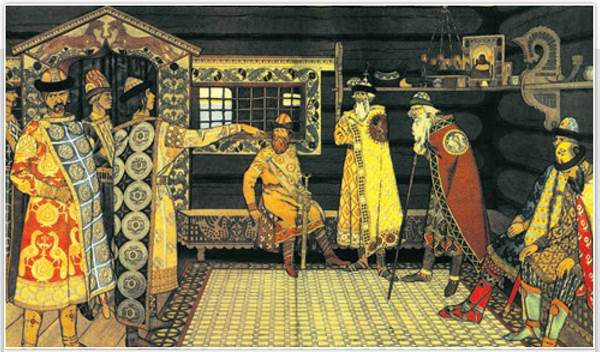
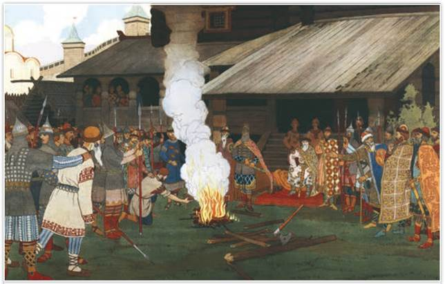
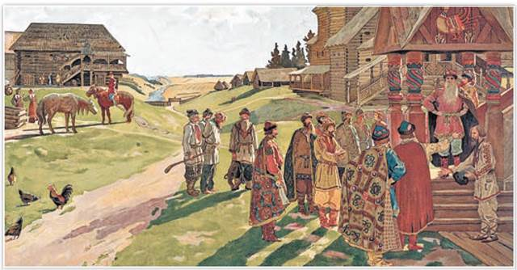

Съезд князей. Художник И. Билибин. 1907 г.
Как вели себя князья на съезде? Можно ли утверждать, что съезд проходил мирно? Ответ обоснуйте.
РОССИЯ
МИР
1. Развитие Руси в 1054—1132 гг. После смерти Ярослава Мудрого в истории Руси начался новый этап, который длился с 1054 по 1132 г. В этот период времени происходили важные изменения в экономической жизни государства. Дело в том, что, когда крестоносцы открыли короткую дорогу на Ближний Восток, источник прибыли русской знати от торговли по пути «из варяг в греки» иссяк. К тому же купеческим караванам на юге угрожали кочевники, что также влияло на доходы от торговли. Желая иметь новый источник прибыли, князья и старшая дружина (бояре) стали заводить свои вотчины — земельные владения, передаваемые по наследству. С конца XI в. военно-служилая знать всё больше видела источник доходов в вотчинном хозяйстве. Теперь богатство князей и бояр составляли не дани и раздел военной добычи, а доходы с вотчин.
Власть киевского князя ослабевала. Одновременно шёл процесс окняжения земель. Это значило, что во многих волостях Руси появлялись князья-наместники, которые собирали дань, вершили суд, поддерживали внутренний порядок, защищали от врагов. Из разных ветвей рода Рюриковичей формировались местные княжеские династии, вступавшие в конфликт друг с другом. Окружение князя всё больше составлял княжеский двор.
Постепенно шёл процесс развития земледелия, ремесла, местной торговли. Бывшие окраины догоняли центры. Хозяйство при этом оставалось натуральным.
2. Порядок наследования престола. На Руси не существовало строгой системы наследования власти, что вело к бесконечным конфликтам. Ярослав Мудрый, желая предотвратить распри князей, установил очередной порядок престолонаследия. Это означало, что, если умирал великий князь, киевский престол переходил к следующему за ним по старшинству брату, а не к старшему сыну. Наследники переезжали из города в город, с младшего стола на старший, продвигаясь в очереди на великое княжение киевское. Князья будто поднимались по лестнице (на Руси — лествице) на одну ступень, поэтому очередной порядок ещё называют лествичным.
Перед смертью Ярослава из его братьев в живых оставался лишь Судислав, но он давно томился в заточении. После Судислава старшим в роду был сын Ярослава Изяслав, он и получил от отца Киев. Святославу достался Чернигов, Всеволоду — Переяславль.
Территория государства принадлежала всему роду Рюриковичей, однако великим мог стать только тот князь, отец которого успел побывать на киевском престоле. Не все князья считали это справедливым, из-за чего лествичный порядок часто нарушался.
3. Княжеские съезды. Завещание Ярослава Мудрого лишь на время остановило княжеские усобицы. Делить престолы мирно Ярославичи, а также их потомки не могли. Русская земля ослабевала от княжеских раздоров, простые жители терпели разорение, князья теряли население — ведь победители брали людей в плен.
Для решения спорных вопросов князья съехались на съезд в Любече в 1097 г. «Почто губим Русскую землю ссорами?» — говорили они. На Любечском съезде внуки Ярослава Мудрого решили: «Каждый держит отчину свою». Это означало, что за каждой ветвью Рюриковичей съезд закрепил владения, передаваемые по наследству (отчины). Князья договорились вместе выступать против нарушителей нового порядка. Но надежды на мир не оправдались, вскоре усобицы продолжились. Решения съезда князей в Уветичах (Витичеве) в 1100 г. лишь на некоторое время ослабили распри князей. Княжеские съезды проводились регулярно, на одном из них князья решили организовать совместный поход против кочевников, нападавших на южные границы Руси.
Съезд князей в Любече подвёл законное основание для утверждения полной самостоятельности местных династий, по сути оформил раздел Руси между Рюриковичами, что грозило распадом единого государства.
4. Правда Ярославичей. Не позднее 1072 г. сыновья Ярослава Мудрого дополнили Правду Ярослава, появилась Правда Ярославичей. Обновлённый свод законов запрещал кровную месть, определял за убийство денежный штраф (виру) в пользу князя и денежный штраф родственникам жертвы (головничество). Размер штрафа зависел от положения убитого в обществе и его доходов. Головничество было гораздо меньше виры.
Если виновный не мог заплатить штраф и вервь отказывалась платить за него, то преступника вместе с семьёй могли продать в рабство. Если вервь не находила сбежавшего преступника, то она сама платила князю штраф — дикую виру.
5. Общество по Русской Правде. Русская Правда — основной исторический источник, позволяющий учёным представить, каким было общество Руси в IX — начале XIII в. Другим важным источником являются летописи.
Вершину общества составляли князья Рюриковичи, разделившиеся со второй половины XI в. на местные династии. После князя по знатности шли старшие дружинники (бояре). За убийство представителя дружинной верхушки платили виру в 80 гривен серебра.

Суд во времена Русской Правды. Художник И. Билибин. 1907 г.
Если суд считал, что показаний свидетелей (послухов) недостаточно, то устраивали Божий суд. Художник изобразил на картине сцену Божьего суда. Обвиняемый в преступлении брал голой рукой раскалённое железо. От того, как быстро заживал ожог, признавали вину ответчика или считали его невиновным.
На следующей ступени общества стояла младшая дружина. Жизнь младшего дружинника оценивалась в 40 гривен.
Основное население Руси составляли свободные крестьяне-общинники и рядовые горожане. Русская Правда именует их «людьми». Они платили князю дань — определённого размера денежные и натуральные поборы. Однако положение «людей» в обществе было высоким. За их убийство требовали такую же виру, как за младшего дружинника, — 40 гривен серебра.
Ниже «людей» стояли смерды — лично свободные, но потерявшие свою общину и землю крестьяне. Смерды жили на земле князя, платили за пользование землёй оброк (дань продуктами), выполняли барщину (работу в пользу хозяина), несли другие повинности, например военную. Вира за убийство смерда составляла 5 гривен, за убийство княжеского коня платили 3 гривны.

В усадьбе князя. Фрагмент. Художник А. Максимов. 1907 г.
Найдите на картине князя, бояр, крестьян-общинников. Составьте небольшой рассказ по картине. Озаглавьте его.
Ниже смердов находились лично зависимые закупы и рядовичи. Закупы брали что-либо в долг — «купу» и обязаны были её отработать. Рядовичи служили по ряду (договору). И те и другие могли вернуть себе волю, уплатив долг, или же по окончании срока ряда. Убийство рядовича наказывалось вирой в 5 гривен.
И наконец, полностью зависимые категории населения в древнерусских источниках называются «челядь», холопы, «роба». Их убийство хозяином не преследовалось, хотя церковный суд требовал от убийцы покаяния. За убийство чужого холопа полагалась вира в 5 гривен.
ПОДВЕДЁМ ИТОГИ
При сыновьях и внуках Ярослава Мудрого начался упадок Руси, государство ослабляли княжеские усобицы. Они сопровождались усилением натиска кочевников на южные пределы страны. Был принят новый свод законов — Правда Ярославичей. Свои противоречия Рюриковичи пытались разрешить на княжеских съездах.
Вопросы и задания
Работаем с хронологией
Расположите в хронологической последовательности события:
Работаем с источником
Прочитайте фрагмент из «Повести временных лет» и ответьте на вопросы.
В лето 6562 (1054). Преставился великий князь русский Ярослав. Ещё при жизни дал он наставление сыновьям своим, сказав им: «Вот я покидаю мир этот, сыновья мои; имейте любовь между собой, потому что все вы братья, от одного отца и от одной матери. И если будете жить в любви между собой. Бог будет в вас и покорит вам врагов. И будете мирно жить. Если же будете в ненависти жить, в распрях и ссорах, то погибнете сами и погубите землю отцов своих и дедов своих, которые добыли её трудом своим великим; но живите мирно, слушаясь брат брата».
Работаем с понятиями
Объясните своими словами значение терминов «смерды», «закупы», «рядовичи», «холопы».
ДОПОЛНИТЕЛЬНЫЕ МАТЕРИАЛЫ
«УЧИТЕЛЮ И УЧЕНИКУ».
Материалы к параграфу на портале «История.РФ».